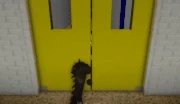
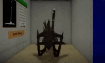

Niloticus is an elongated, lizard-like experiment that escaped the lab it was made in being labeled as "G-07α". He is an original monster based off of Godzilla. Initially teased on May 20th, 2024, and officially released on July 19th, 2024, He is introduced as the twelfth monster in Pillar Chase 2 after WYST, and can be currently bought for 1455 coins in the shop. (Previously 1954 before the Black Friday Event's conclusion).
|  Niloticus lunges forward and grabs any survivor in front of them before biting them, dealing 25 DMG. If Niloticus hits a survivor with the Radiated debuff, it will do 50 DMG. Hitting a player with this attack will apply the Radiated debuff that lasts for 5 seconds. Has a 9 second cooldown. |
 Niloticus sprays mist at the ground which creates a red puddle after 3 seconds and adds 3 seconds to the round timer. |